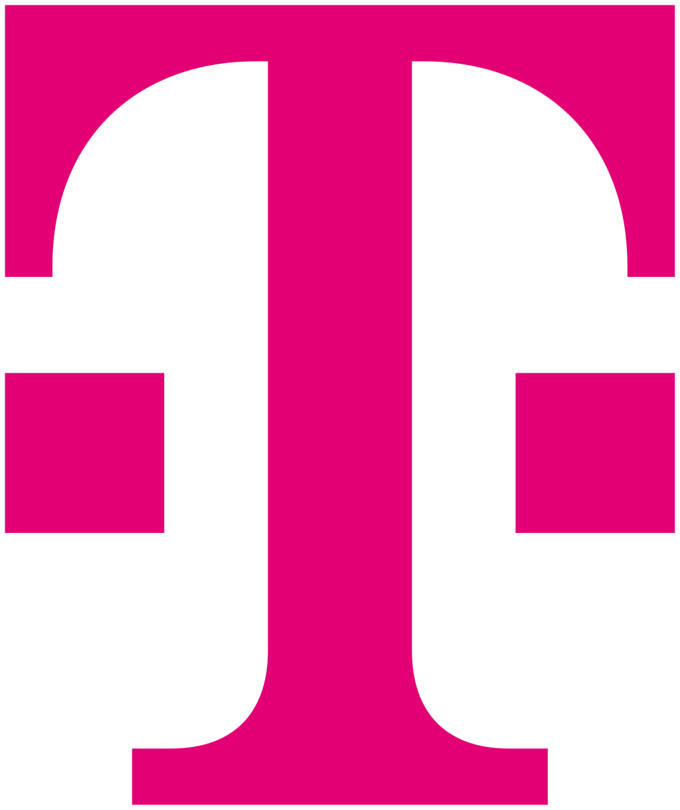
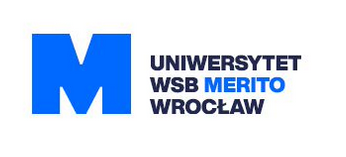

Doświadczenie zawodowe
Asystent inżyniera oprogramowania
 Taskscape Ltd | 02.2026 -
Taskscape Ltd | 02.2026 -
Praktyczne projekty IT: Tworzenie i rozwój aplikacji w C#/.NET, a także diagnozowanie i rozwiązywanie problemów technicznych w środowiskach Windows i Linux.
Londyn - zdalnie
Kierownik sprzedaży
Interseller s.c. | 11.2022 - 01.2026
 APS T-Mobile Polska s.a.
Umiejętności: Zarządzanie KPI; Zaawansowana automatyzacja rozliczeń i raportowania (MS Excel); Wsparcie techniczne L1 (TeamViewer); Administracja siecią (LAN/Wi-Fi) oraz flotą urządzeń (Windows/Android/iOS); Zarządzanie obiegiem dokumentacji; Troubleshooting sprzętowy i systemowy (Windows/Android/iOS); Migracja danych cross-platform (iOS ↔ Android); Konfiguracja urządzeń sieciowych; Obsługa zgłoszeń technicznych (Ticketing); Automatyzacja arkuszy kalkulacyjnych (MS Excel); Wsparcie techniczne użytkowników.
Wrocław
Specjalista ds. sprzedaży
Interseller s.c. | 07.2020 - 10.2022
Euro-Phone sp. z o.o. | 03.2019 - 07.2020
APS T-Mobile Polska s.a.
Umiejętności: Troubleshooting sprzętowy i systemowy (Windows/Android/iOS); Migracja danych cross-platform (iOS ↔ Android); Konfiguracja urządzeń sieciowych; Obsługa zgłoszeń technicznych (Ticketing); Automatyzacja arkuszy kalkulacyjnych (MS Excel); Wsparcie techniczne użytkowników.
Wrocław
Wykształcenie
 Uniwersytet WSB Merito Wrocław
Inżynier (Inż.), Architekt rozwiązań IT w chmurze obliczeniowej - Informatyka
Umiejętności: Administracja środowiska chmurowego Azure (IAM, VM, SSH, Virtual network gateways/Sieci wirtualne, Grupy zasobów); Python; SQL(MariaDB/MySQL); Administracja systemami Linux(Ubuntu); Administracja systemami Windows Server; Konfiguracja switchy w środowisku CISCO(TCP/IP); Podstawy pracy w SCRUM
10.2023 - obecnie
Certyfikaty
 Wykorzystanie AI w rozwoju firmy
Wykorzystanie AI w rozwoju firmy
 Google
Google
ID: bc03da4f-ae91-4c22-910e-72a2a54fc03b
Umiejętności: Prompt Engineering; Uruchamianie LLM w środowiskach lokalnych
Data zdobycia: 10.2025
 AWS Certified Cloud Practitioner
AWS Certified Cloud Practitioner
 Amazon Web Services
Amazon Web Services
ID: 6cfe39404bfb4d93b90cd4f24f6395db
Umiejętności: AWS Cloud; Cloud Computing; Cloud Platform; Cloud Services; IAM
Ważny: 08.2025 - 08.2028
Kursy
SQL w mgnieniu oka
Używany DBMS: MariaDB/MySQL
Umiejętności: Zarządzanie bazą danych przy użyciu SQL; Różnice w implementacjach języków SQL
Data ukończenia: 10.2025
Moje Projekty
WindowLogger
Byłem odpowiedzialny za rozwój projektu WindowLogger. Do moich zadań należało stworzenie aplikacji graficznej kontrolującej działanie produktu, przekształcenie projektu z wersji Debug do wersji Realase, a także stworzenie instalatora.
Umiejętności i Technologie: C#/.NET; Git; Inno Setup
 Powiązane z: Taskscape Ltd
Powiązane z: Taskscape Ltd
Home Server
Prosty domowy serwer stworzony przy użyciu laptopa Asus 556LD i Switcha keepLINK 2,5Gbps w wersji zarządzalnej. Serwer posiada statyczne prywatne IP oraz OS serwera to Debian bez GUI. Zarządzanie serwerem odbywa się wewnątrz sieci lokalnej i po VPN. Do zarządzania maszyną wykorzystuję projekt Cockpit, a do konfigurowania serwisów takich jak ADGuard czy Jellyfin używam CasaOS, która wykorzystuje konteneryzacje aplikacji.
Umiejętności: Administracja systemem Linux (Debian headless); Automatyzacja zarządzania energią, aktualizacji OS i harmonogram automatycznego restartu; Konfiguracja DNS; Konfiguracja VPN; Konfiguracja Exit Node; Zarządzanie kontenerami; Mapowanie portów; Zarządzanie adresacją IP(DHCP, Static IP); Rewitalizacja starego urządzenia; Self-hosted services
Technologie: Linux(Debian); CasaOS; Cockpit; Docker; Self-hosted VPN(Tailscale); DNS(ADGuard)
Statyczna strona web hostowana na Amazon S3
Prosta strona WWW z customową domeną od Route 53, hostowana na Amazon S3, dystrybuowana globalnie przez CloudFront z certyfikatem SSL.
Umiejętności: HTML; CSS; JavaScript; AWS; Hostowanie strony www; Git
Lokalny asystent AI
Lokalny asystent AI (GPT like), hostowany w sieci lokalnej przy użyciu Ollama dla dystrybuowania modelami LLM, Dockera dla backendu i Open Web-UI dla frontendu. Byłem odpowiedzialny za wymyślenie projektu, kierowanie zespołem, postawieniem nowego backendu, a także za testowanie działania naszego lokalnego chatbota. Projekt został przystosowany do funkcjonowania w środowiskach Linux i Windows(WSL2). Projekt był prowadzony na potrzeby kursu Narzędzia do automatyzacji budowy oprogramowania.
Umiejętności: Administracja systemem Linux; Prompt Engineering; Uruchamianie LLM w środowiskach lokalnych; Hostowanie AI-Chat w sieci lokalnej; Mapowanie portów; Zarządzanie gałęziami Git; Tworzenie skryptów bash w celu automatyzacji niektórych procesów.
Technologie: Linux; Ollama; OpenWeb-UI; Docker; Docker Compose; API; Git
Powiązane z: Uniwersytet WSB Merito Wrocław